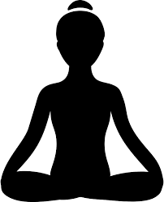
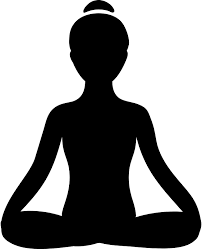
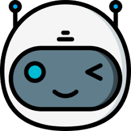
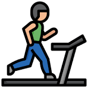
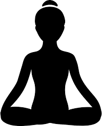

Many people are afraid to get started in fitness simply because they don't know where to start. Our fitness chatbot cuts down this barrier with a comprehensive supply of fitness-related information, including diet and exercise. We'll also make sure you're not alone on your fitness journey, with our bot supplying plenty of motivation and encouragement.

Let's address some of questions of definition and better qualify your conjecture. Flesh it out. Get specific.

Add a caption
We are at the question of quality: why is solving this problem important? Who are the stakeholders? What happens if we don't do anything? What are the costs of solving/not solving the problem/issue?

Physical fitness requires discipline and guidance
MoveMe will democratize access to accurate fitness information for everyone. Determined to coach users on their fitness journey, our team prioritizes delivering quality fitness resources. Each team member will research specific areas of MoveMe's expertise. During the next two weeks, we'll meet 2-3 times gathering updates, delegating tasks and further refining our model.